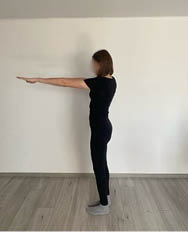
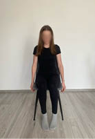
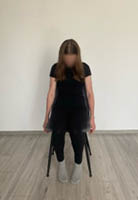
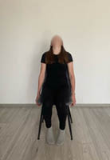

5.3. Ćwiczenie 3
Pozycja stojąca, wyprostowane ręce przenieś w przód, na wysokości barków. Ruch: wysuwaj naprzemiennie ręce do przodu, tak aby raz prawy, raz lewy bark znajdował się przed tułowiem (rycina V.5.5).
Rycina V.5.5.
Naprzemienne wysuwanie barków do przodu

5.4. Ćwiczenie 4
Pozycja siedząca na krześle lub stojąca. Ruch: wykonuj powolne skłony głowy w przód, kierując brodę w stronę mostka i do tyłu, starając się patrzeć w stronę sufitu (rycina V.5.6).
Rycina V.5.6.
Skłony głowy w przód i w tył



Fizjoprofilaktyka – aktywne przerwy w szkole
465